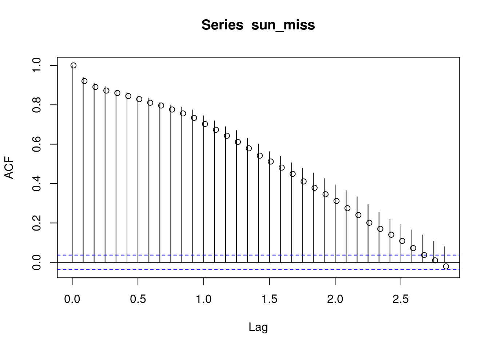
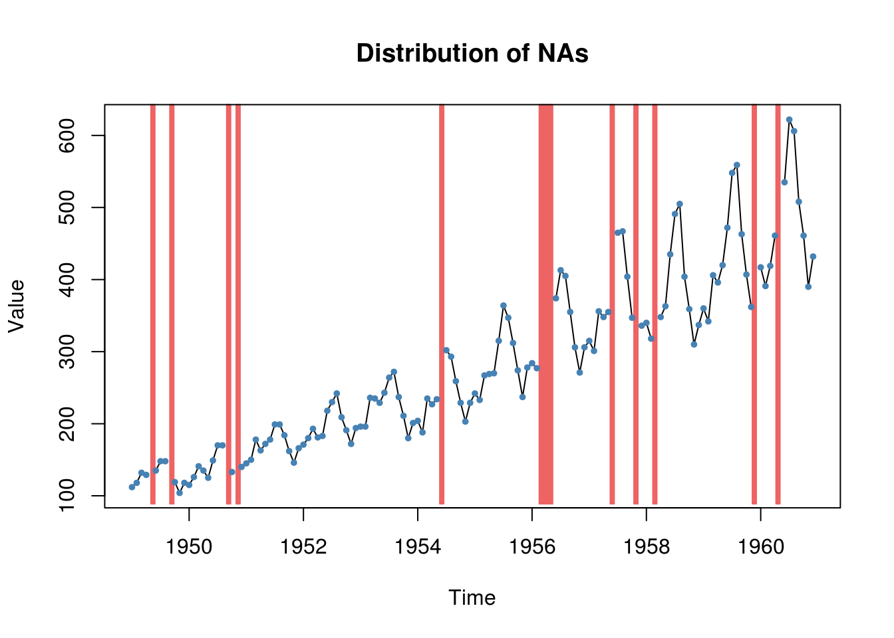
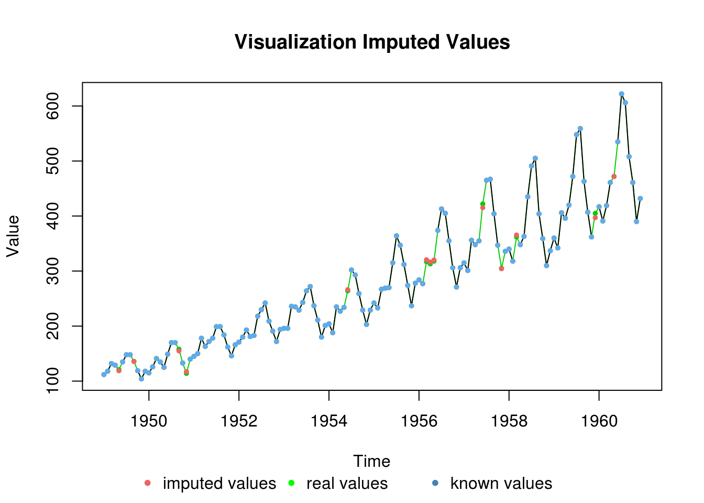
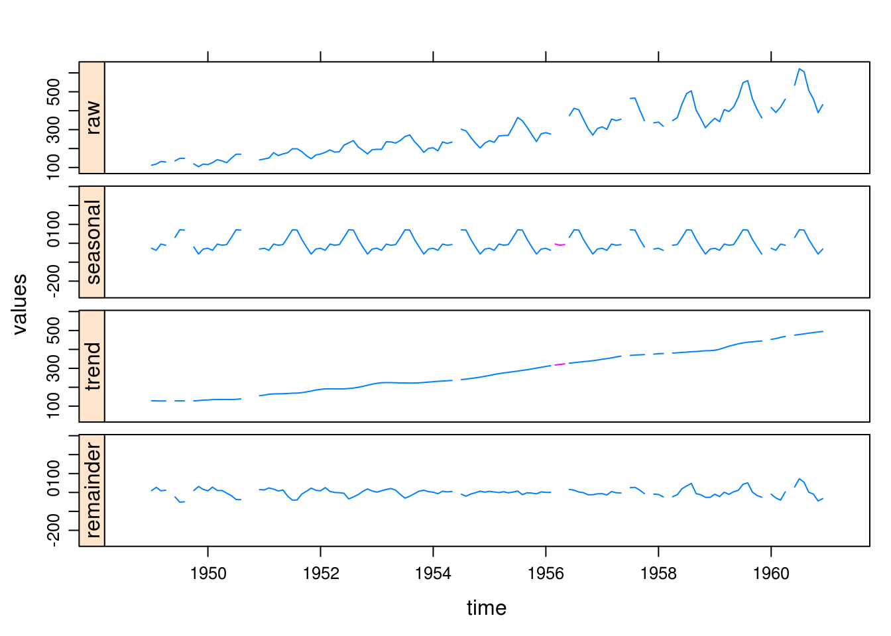

6.2 Imputation of missing values
If there are missing values in a time series, one ought to handle them with caution. This section adresses this problem, and is there mostly for students whose project dataset features missing values. A simple call to summary will tell you if your object contains NAs.
Suppose we remove some values from sunspots.
sun_miss <- sunspots
# We remove 300 values at random
sun_miss[ints <- sample.int(length(sunspots), 300, replace = FALSE)] <- NA
# The acf function will return an error if we do nothing acf(sun_miss) Ask
# the function to omit those values from the calculations (correct way if we
# keep them)
correlo_pass <- acf(sun_miss, na.action = na.pass)
correlo_excl <- acf(sun_miss, na.action = na.exclude, plot = FALSE) #equivalent acf(na.omit(as.vector(sun_miss)))
# The second is incorrect, because it changes the labels
points(correlo_pass$lag + 0.01, correlo_excl$acf)
The output is slightly different, but moreover the time stamps are off! This loss of information is even more dramatic if there are multiple consecutive values missing, which may distort the seasonality. Some datasets, for example financial time series, are irregular. This is due to closure of the stock market on holydays and week-ends, so there are apriori no missing values there. Just work with the classes zoo or xts and use na.pass as argument. This way, however, you won’t ever compute lag one correlation between Friday and Monday, but will classify the empirical estimates as three days. You can also remove the weekly seasonality first and later use na.remove (just be careful with your interpretation then).
If your series has values that are missing at random and there is very few of them (1%), you could as a preliminary step impute them. Including new datapoints will bias your standard errors (you are adding information that was not present in the original dataset) unless you adjust for this carefully.
##Diagnostics for missing values and smoothing
The package stlplus handles missing values, contrary to stl. Likewise, there are utilities in zoo to perform linear interpolation or use smoothing estimates from a seasonal Kalman filter (which we will cover at the end of the course).
These are available respectively under the name zoo::na.approx and zoo::na.StrucTS (see also the help file). More sophisticated methods can be found in the package imputeTS. The latter provides more tools for plotting data with missing values (plotNA.distribution) and obtaining summary statistics out of the box (statsNA).
library(imputeTS)
plotNA.distribution(tsAirgap)
plotNA.imputations(x.withNA = tsAirgap, x.withImputations = na.seadec(tsAirgap,
"kalman"), x.withTruth = tsAirgapComplete)
# Install package if not already present, otherwise load it
if (suppressWarnings(!require(stlplus))) {
install.packages("stlplus")
library(stlplus)
}
plot(stl_Airgap <- stlplus(tsAirgap, s.window = "periodic"))
# Increasing variance with number of air passengers - would need to
# transform the series to stabilize the varianceThe following illustrates the use of local fit to interpolate the missing values, but one could equally well fit using a local linear model with loess and use the fitted values by predicting at unobserved time points. In general, these predictions are wrong because they do not include any time dependence structure. Another useful feature from the package zoo is na.trim to removing trailing NAs at the beginning and the end of a series.
6.2.1 Exercise 2: Tyne river flow
- Import the following dataset and look at the summary
tyne <- read.csv(file = "http://sma.epfl.ch/~lbelzile/math342/23001-Tyne_at_Bywell.csv",
header = FALSE, sep = ",", skip = 16, col.names = c("time", "height", "flag"),
as.is = TRUE, na.strings = "NA")[, 1:2]- The dataset contains missing values. Transform
tyneinto an object of classts. Plot the series withplotNA.distribution. Comment on the implications of imputing those values and on the values of the (partial) correlogram. - Try using
zoo::na.locf. What does the function do? - Perform an
stldecomposition withstlplusand comment on the output.